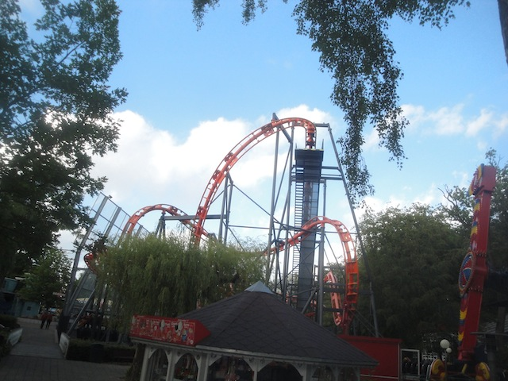
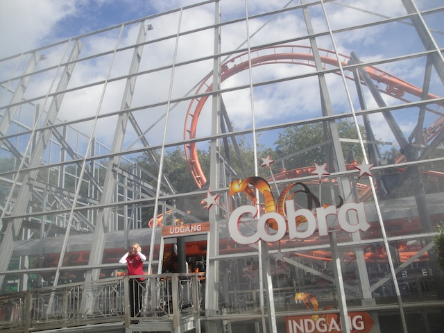

| |
Cobra Review

We're here at Tivoli Friheden to ride Cobra. The parks inverted coaster and this ride is...intersting to say the least. No really. This coaster is one of those rides that's just....it looks like a death trap. And given that this ride literally derailed right when it first opened, that's giving the term "Death Trap" a new literal meaning (luckily, nobody died or got seriously injured in the accident). Also, this is made by a company called Sartori. And...not only have they made very few coasters, but pretty much all their other rides are Wacky Worms. This is essentially the only full sized coaster they've ever made. So yeah. We're going to ride an Inverted coaster from the company that makes Wacky Worms. Uh...this should be intersting. Let's see what they can do. So we get in the cars, pull down the restraints, and away we go. We go around a turn, making it straight to the lifthill. Oh boy. Just think to yourself, "I'm on an inverted coaster that derailed when it first opened, made by the Wacky Worm company. I'm so f*cked". And considering that this ride has a lifthill that really seems to be struggling to make it up the hill. Seriously, it feels like the chain is going to snap and we'll just roll on down. But eventually, we make it to the top, and there's the first drop. Oh crap. This thing is steep. And it...F*CK!!! We dive into the twisted first drop, right into a twisted mess of track and supports. We gain some speed, but the bottom of the first drop is...awkward. It sort of shakes. Almost as if this was made of chewing gum and rubber bands. Like the company was used to making Wacky Worms and isn't used to making full sized coasters. We then head up into an tiny little immelmahn. Yeah. This thing has a bad smack to it. But honestly, it doesn't hurt THAT bad. But I think the thick padding helps with that. We go out of the immelmahn, and straight into a cobra roll. We expect some headbanging, but it's actually not that bad. It just feels...awkward. Like you're expecting it to bash you, but it spares your head. And hey. The cobra roll is actually kind of fun. I kind of like this. OK, we exit out of the cobra roll after flipping upsidedown twice. There's still plenty more ride to go through. Oh, and there's something underneath the ride. It looks really weird and gives us these footchoppers. We then head into this hill that doesn't give us any airtime. All this does is reduce our speed and feel...really awkward. We then head into this helix drop and...the ride begins to shake some more. No really. It's like the coaster is cold and shivering. It just feels weird and awkward. And of course, this continues as we go into the helix. We then dip down into some trims. Yeah. it's a good idea to get this to stop. We go around a turn and into the final brake run. Uh...yeah. So that's Cobra. You know when you have someone way in over their head with some assignment, and they do a better job than you expected, but it's still not really good and feels clunky and awkward, but you can see that they gave it a good try? That's this coaster in a nutshell. In some ways, it exceeded my expectations as it was kind of fun, didn't try to kill me, and is actually a better coaster than the really bad and painful SLCs. But at the same time, it still feels like its made of chewing gum and you can tell that this manufacter doesn't do big coasters. I doubt another coaster like this will ever be built thanks to the derailing accident. And why should they when you can buy a B&M Invert. Or if not that, a Vekoma SLC (Yeah. This ride is better than the bad SLCs with a lot of headbanging. But if the park runs it right and keeps it smooth, then the SLC is better). It's not that good, but I'd still recommend it simply for being unique. Plus, it's not as bad as you think it's going to be.
5/10
Location: Tivoli Friheden
Opened: 2008
Built by: Sartori
Last Ridden: June 19, 2014
Cobra Photos



Home
|